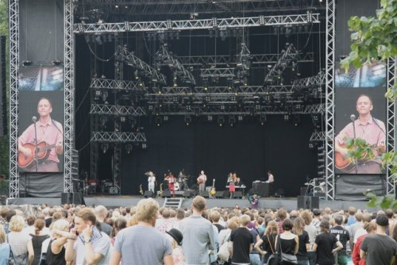
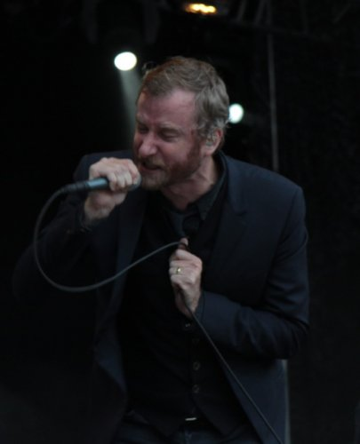
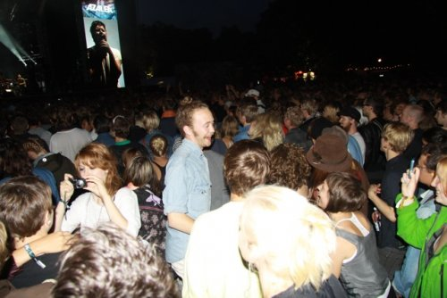
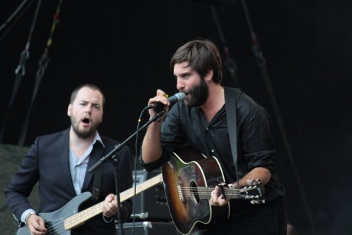
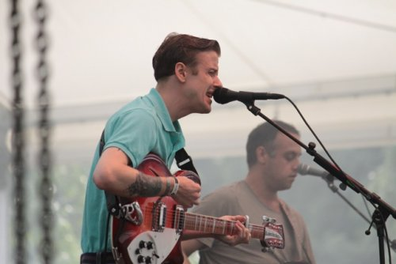
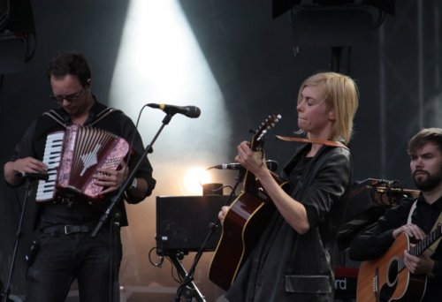
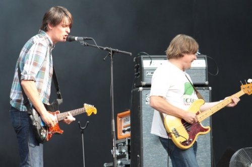
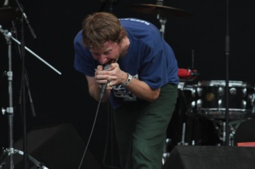

Way Out West Festival 2010
Thursday
Having deposited our four month old son with his Swedish grandparents, my fiancée Emma and I hopped on an uncharacteristically whiffy train in the south of Sweden bound for Göteborg and the Way Out West festival. We tend to visit Sweden every six months or so to see family, but I’d never had the chance – or perhaps more accurately, I’d never had a reason – to visit Göteborg before. As enticing as Way Out West looked on paper, the opportunity to spend a baby-free weekend in Sweden’s second city provided even greater cause for excitement. And to be brutally honest, the prospect of two nights of glorious, uninterrupted sleep appealed more than any single act on the bill, but that says more about the grind of parenthood than the efforts of the organisers, Luger, who should be congratulated for securing one of the more diverse line-ups of the summer.
We arrived at the Central Station and joined an orderly queue to collect our festival passes. I was immediately struck by how well-oiled the operation appeared and in less than fifteen minutes we exited the Way Out West office with light blue ‘Press’ passes on our wrists and smug, self-satisfied grins on our faces.
Two festivals in one, Way Out West encompasses three nights of club shows (Thursday/Friday/Saturday) and two days (Friday and Saturday) of live music in the Slottskogen park, which is a short tram journey from the centre of Göteborg. To avoid confusion, the club shows are grouped together under the Stay Out West banner, which proved to be a fitting title as almost every artist I wanted to see – Field Music, Caribou, Tallest Man On Earth, Taken By Trees, Shearwater – was due on stage after 11pm. My sleep deprived state bolstered by a heavy meal and an evening beer, the call of the hotel bed was simply too great to ignore. Tomorrow, I promised myself, we would both Stay Out West. At least until midnight.
Friday
Having successfully negotiated a hectic hotel breakfast, we found ourselves with a few hours to kill in the city centre prior to the start of the festival. Unfortunately, we both underestimated the complexity of the Göteborg tram system and somehow managed to arrive later than planned at Slottskogen. The queues were enormous, but I spotted a special press entrance and with a flash of our wristbands we were soon strolling up an ominously muddy track towards the festival stages.
The unmistakeable croon of Jens Lekman greeted our arrival and we headed down to the Flamingo stage to catch the final two thirds of what turned out to be a rather unremarkable set. Songs that thrilled in 2007 sounded like they'd been played to death (I suspect they have) and Jens' new material didn't really stand much of a chance given the setting (large stage, sunny day, start of the festival). Even the sight of guest keyboardist Bill Wells waving his arms like an aeroplane during Sipping On The Sweet Nectar couldn't save this set from mediocrity.

Next up, Panda Bear on the Linné stage. Now, I'm a huge Animal Collective fan, I loved Person Pitch, and I fully expected this to be one of the highlights of the day, if not the entire festival. Turns out I was wrong in a big way. After fifteen minutes of tuneless noodling and off-key vocals, I turned my back and walked away from the most obnoxiously dull performances I've seen since The Brian Jonestown Massacre bored me rigid a few years back.
I've never liked Paul Weller, but you have to give the guy credit for knowing how to play a mid-afternoon festival set. The Modfather was obviously keen to showcase his new album, which meant we had to endure that awful Wake Up The Nation song, but at least he had the decency to throw in some old favourites and actually engaged with the audience.
Things were looking up, the sun was shining, and the day finally burst into life at 16:30 when Wu-Tang Clan took to the stage. There may have been a few notable absentees but the Clan were on fine form, bantering with the crowd like no other act at the entire festival. We were invited to - inevitably - put our hands up in the air and to "represent Sweden", where "some of the most beautiful women in the world" come from. They played some tunes, too: Ice Cream, Liquid Swords, Triumph, Ain't Nuthing ta F'Wit, the list goes on. And it was great. Funnily enough, I had to bribe Emma with a £120 pair of boots to get her to watch Wu-Tang Clan with me; at the end of the day she was calling their set one of her highlights. When I suggested returning the boots she was quick to cite the mental scars from Panda Bear's set as ample justification. A valid point: she kept the boots and I cursed Noah Lennox again.
The Soundtrack of Our Lives took to the stage with the Göteborgs Symfoniker orchestra and delivered a set of stodgy, overcooked dad-rock tunes. Everyone knows that less is sometimes more and in the case of TSOOL this really rings true. I did enjoy Instant Repeater '99, but by that point I was already sat of the front of the adjacent stage waiting for The National.
One of the great things about Way Out West is that every artist gets a decent amount of time on stage. The National got 80 minutes in the middle of the day, which meant we got to enjoy most of High Violet, at least half of Boxer, the choice cuts from Alligator, and even a few early gems. The performance was professional and slick, as you'd expect from this experienced and increasingly successful band, but it wasn't without some moments of unpredictability. On record Matt Berninger sounds stern, serious and sometimes even a little creepy. At Way Out West, he injected some life into The National's occasionally sombre material, screaming his way through the climax of Conversation 16, attacking his microphone stand, and finally smashing a wine glass on stage with the mischievousness of a naughty schoolboy. I particularly enjoyed the new material, and England sounded especially fantastic with its baroque violin part pushed much higher in the mix.

Iggy & The Stooges are always entertaining festival fare, and their set at Way Out West was no exception. The site of Iggy on his hands and knees, rocking back and forth doggy-style during I Wanna Be Your Dog will stay with me for much longer than I'd like it to.
A slightly shorter than anticipated LCD Soundsystem set followed, the band's equipment having been held back at the Swedish border for reasons unknown but most likely bureaucratic in nature. Ever the perfectionist, James Murphy seemed more frustrated than most of the audience about this, but his band performed admirably under the time constraints - I'm sure Murphy would have preferred a more thorough soundcheck - and everything sounded great through these ears. Drunk Girls, All My Friends and the obligatory Daft Punk Is Playing At My House ("My housssse!") were the standouts, but the audience went mad for everything, to be honest. I didn't see anywhere near as much uninhibited dancing at other point over the weekend. If Murphy does indeed decide to call it a day, LCD Soundsystem will be sorely missed.

M.I.A. brought the first day proper of Way Out West to a close with a startlingly hollow set on the Flamingo stage. She arrived twenty minutes late and looked completely out of her depth in a headlining slot. Without wishing to sound like a grumpy old bore, I'm finding it increasingly difficult to identify anything remotely appealing about M.I.A these days. She really can't sing, she has a tendency to act like a spoiled child, and her reliance on lame controversy to make any sort of impact is becoming tiresome. The only saving grace here was her stage show, which offered a welcome diversion from the surprisingly stale music on offer. I should have gone to watch The xx instead.
Saturday
Saturday was always going to be a very different experience. The plan was for Emma to head home early in the morning to look after our son, so I'd anticipated flying solo for the day. As a big believer in the shared experience of live music this prompted me to dial down my expectation levels a little. I decided that I would shun human contact altogether in a bid to try and get some decent photos of the event (Friday's efforts were a little ropey, as you may have noticed). Another nagging concern was the fact that I would have to leave the festival early in order to make the last train home (when I say home I mean Emma's parent's house, which is about 3 hours south of Göteborg). My calculations suggested I might need to walk away from Pavement's set in order to make it to the station on time, which kind of put a dampener on the day before it had even started.
Fortunately, there was at least one reason to remain cheerful: the weather. Yes, the sun was shining and the forecast optimistically hinted that it would continue to do so for the entire day. By the time I miraculously managed to catch the correct tram to Slottskogen I'd already ditched any defeatist thoughts I had about the day and decided to make the best of it.
I immediately regretted this breezy, enthusiastic approach when I discovered that the first band on stage were hotly-tipped Brooklynites The Drums. The band's Summertime EP had left me cold, and I spent the first twenty minutes of their set wondering why there's any sort of buzz surrounding The Drums at all. If this really is the great hope for 2010 (thanks Pitchfork readers) then will someone kindly anaesthetise me and wake me up in January? They were atrocious.
I stumbled over to the Flamingo stage in search of salvation and Shout Out Louds delivered the goods. Though well aware of the band and its more high profile songs, I don't think I'd ever really invested a full hour of my time in Shout Out Louds prior to this set. I guess I'd always written them off as a competent but nonessential kind of act; peddlers of respectable indie-pop destined to score no more than seven out of ten on sites like this. On the evidence of this tremendous early afternoon set, my preconceptions were typically way off mark. Unlike bigger names like M.I.A and even Jens Lekman, Shout Out Louds had the crowd eating out of their hands and they looked entirely comfortable on this large outdoor stage. I didn't recognise too many of the songs myself, but plenty around me were singing along passionately and the enthusiasm was infectious. As is so often the case at festivals, one of the bands I hadn't expected to enjoy were ultimately filed away as one of the weekend's highlights. Sometimes it's nice to be proved wrong.

At 3pm, the first clash of the day forced me to choose between Girls and Mumford & Sons. As I pretty much despise everything about Mumford & Sons, this wasn't too taxing a choice. While I remain unconvinced about Girls, I did fancy catching Hellhole Ratrace and Lust For Life live, and the move paid off. The same problems that led me to pan the band's debut album surfaced, but in the live setting the band's two signature tunes sounded genuinely amazing. Ordinarily, I'd find this gulf in quality between songs rather frustrating, but when I remembered that Girls were helping to block out the distant rumble of Mumford & Sons I couldn't help but be grateful.

Prior to Way Out West, Anna Ternheim was just a name to me. I hadn't heard a note of her music and if I'd read her mini-biography on Spotify ("her poignant, urgent, piano-driven songs nod to artists like Coldplay and, to a certain extent, Dido") I'm pretty sure I would given her set a wide berth altogether. I'm glad I didn't. I'm not sure if she's completely revamped her sound, but Dido-esque this most certainly was not. Ternheim's backing band conjured up some pretty moody, noir-ish stuff, which suited her soulful, smoky vocal perfectly. Bonus marks for covering Arcade Fire's My Body Is A Cage in Swedish, too.

The Radio Dept. delivered a one-paced set of shoegaze-infused indie-pop which I mildly enjoyed from the sun-drenched comfort of the grassy area to the left of the Linné stage. I left before the end to catch a bit of Reflection Eternal, the hip-hop duo consisting of Talib Kweli and DJ Hi-Tek, and then found a place right in front of the Flamingo stage from which to take in Pavement's set.

I was lucky enough to witness a mesmerising performance from the indie-rock pioneers at their own ATP event back in May and was disappointed to discover that Malkmus and his men would only be playing for one hour at Way Out West. I'd assumed Pavement would be a big deal in Sweden, but their billing and the audience response to their set seemed to suggest otherwise. As I went mad (well, as mad as a sober foreign guy, on his own, weighed down by a bulky camera bag can reasonably act in the middle of the afternoon) for songs like Rattled By The Rush, Here, Gold Soundz, Two States, Date w/IKEA and Stereo, I soon realised that I was in the minority. Rather than savouring Pavement's set, people around me were texting, chatting, furiously making out (and standing on my toes in the process), and - unforgivably - chanting "Håkan, Håkan!" in anticipation of local hero Håkan Hellström's imminent appearance. It's true, Pavement have probably played better shows and they didn't look particularly enthusiastic, but this was still an awesome hour of vintage indie-rock and for my money they didn't get the respect they deserve. I left a few minutes before the end of Pavement's performance and as I battled my way through hordes of teenage girls with Håkan Hellström t-shirts on I accepted that leaving early might not be a bad thing after all.

(For those fortunate enough to have never heard his music, Håkan Hellström is a tone-deaf attention seeker who wears a sailor outfit and jumps around a lot. Look him up on YouTube if you're curious, but don't say you weren't warned…)
. . .
So that pretty much sums up my musical experience at Way Out West. Music is crucial to the success of a festival, but there are many other important elements that it would be careless to overlook in an article like this. I'm talking toilets, the festival environment, food stands, the clientele, atmosphere etc. If there were any deficiencies in the line-up (and I would argue that most tastes were well catered for) then these were easily countered by the smoothness of the Way Out West operation and the overriding sense of good, clean fun.
The largely European audience (for not everyone was Swedish - I ran into a fair number of Brits, and heard a few American accents too) was very respectful and considerate. Obnoxious behaviour was surprisingly scarce and aside from the embracing couple who stepped on my toes during Pavement, I didn't get the urge to punch anyone in the face all weekend.
The food stands offered a variety of International cuisine with vegetarians and health nuts both well catered for, too. I had the same lunch on both days, a delicious Lángos (deep fried flat bread) with caviar, prawns, creme fraiche and red onion. Alcoholic beverages weren't particularly cheap on site - I think I paid 50 kronor (£4.50) for a pint of Carlsberg - but in Sweden it seems that the only thing people want to drink is coffee. Even in the blistering sunshine, the festival site was awash with mobile coffee vendors gently calling out "Kaffe, Kaffe!", and all of them were doing a brisk trade.
The toilets were immaculately clean and the festival site itself was well maintained throughout the weekend. At British festivals the whole place smells like a landfill site by the end of the first day; at Way Out West there was no such stench, and plenty of recycling bins encouraged the festival-goer to be responsible and considerate to the environment. Rather than selling water at an inflated price, the festival - in partnership with SJ, the government-owned train operator - offered free water from the pump, even providing reusable, recyclable plastic bottles. There was a gentle corporate presence at the site, but I never felt like I was being ripped off (except at the bar, but high alcohol prices are pretty much the norm in Sweden anyway) and it never seemed to encroach on the generally independent spirit of the festival.
So, taking everything into account, Way Out West 2010 was a great festival. Only three or four artists really made a huge impact in musical terms, but the friendly atmosphere and the opportunity to spend a summer's weekend in a beautiful park made this a truly special weekend. If you ever get the chance to pay Way Out West a visit, I'd highly recommend it. I'm certainly planning to go back and next time I will definitely get more involved in the Stay Out West side of the festival.
26 September, 2010 - 18:48 — David Coleman